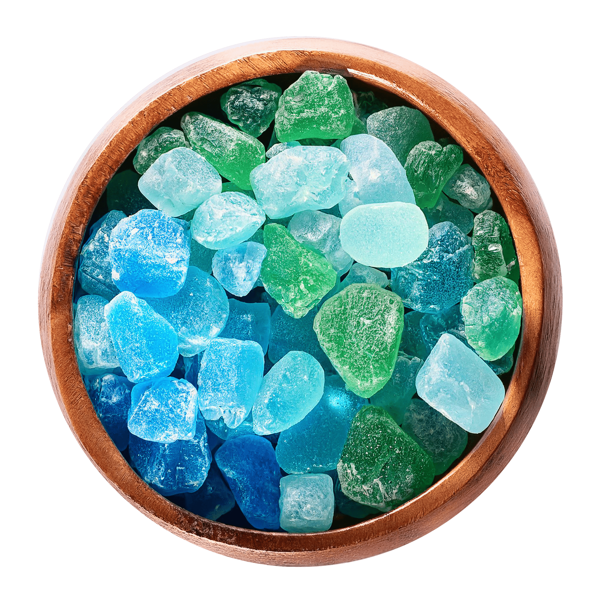

ABOUT-海の石について-

沖縄の透き通る海をイメージして作られた琥珀糖「海の石」。
砂糖と寒天を主成分に、色鮮やかな果汁やエッセンスで風味付けされた美しい和菓子です。
その透明感のある姿は、まるで食べる宝石のような美しさ。口に入れると、さっぱりとした甘さが広がります。
「海の石」は、沖縄での思い出をかけがえのないものとして持ち帰ってほしいという想いから生まれました。
ひと粒ひと粒が旅の記憶の一部となり、思い出を鮮やかに蘇らせてくれることでしょう。
また、食べ終わった後は、缶に旅の写真を入れて、タイムカプセルのように大切に保管するのも一つの楽しみ方。
時間が経って缶を開けるたびに、あなたの旅の記憶を色鮮やかに甦らせます。
沖縄の海の色を再現した美しい色合い

「海の石」は、沖縄の海をイメージして、青色、緑色、ターコイズブルーなど色とりどりの美しい色合いで仕上げられています。
それぞれの色は、自然な果汁やエッセンスを使用して、沖縄の海の深さや澄んだ水面を表現しています。
青色: 新鮮な青リンゴやブルーベリーの果汁から。
緑色: 美しい海藻や沖縄の自然をイメージ。
ターコイズブルー: トロピカルフルーツを使った、爽やかな風味。
これらはそれぞれが一口ごとに異なる味わいを楽しめる要素となっています。